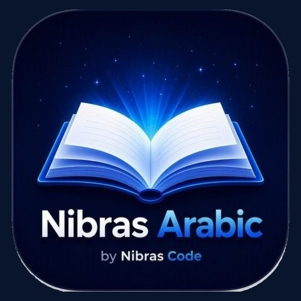

← Bütün tətbiqlər

Dil öyrənmə
Nibras Arabic
Ərəb dilini rahat, vizual və praktik yanaşma ilə öyrənməyə kömək edən tətbiq.
Nibras Arabic, Nibras Code yanaşmasına uyğun olaraq rahat istifadə, müasir görünüş və real ehtiyaclara fokuslanır.
Tətbiqin yükləmə linki və platforma məlumatları yayımlandıqda bu səhifəyə əlavə edilə bilər.
Əsas yanaşmaSadə, aydın,
Sadə, aydın,
faydalı.
Funksiyalar istifadəçini yormadan gündəlik işi daha sürətli və rahat etmək üçün nəzərdə tutulur.
Praktik öyrənmə
Ərəb dilini gündəlik istifadə üzərindən öyrənməyə fokuslanan yanaşma.
Vizual rahatlıq
Oxumağı və məşq etməyi asanlaşdıran təmiz interfeys.
Addım-addım
Öyrənmə prosesini aydın və davamlı mərhələlərə bölən təcrübə.